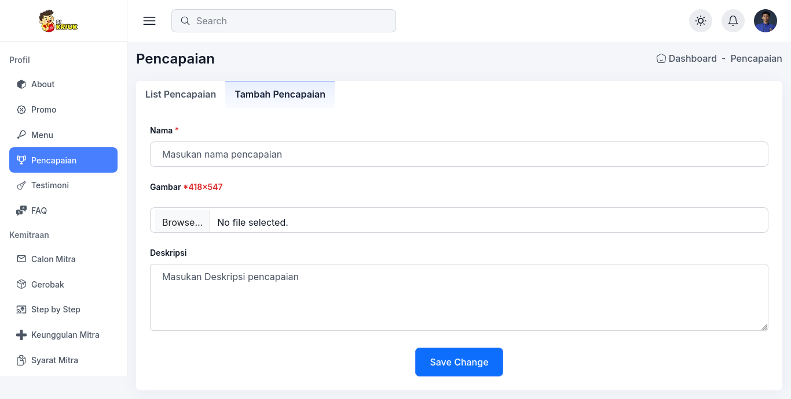

Pencapaian
Berikut adalah penjelasan tentang "pencapaian" dalam CMS Sikriuk.
Fitur Pencapaian
Fitur pencapaian memungkinkan Anda untuk menampilkan pencapaian penting dari bisnis Anda. Ini membantu membangun kepercayaan dan kredibilitas di mata pelanggan.
Menambahkan Pencapaian
Untuk menambahkan pencapaian ikuti langkah langkah berikut:
-

- Buka halaman "Pencapaian" di menu admin.
- Klik tombol "Tambah Pencapaian".
- Isi semua informasi yang diperlukan, ukuran gambar 418x547
- Klik simpan
Menghapus Pencapaian
Untuk menghapus pencapaian, pilih pencapaian dari daftar dan klik ikon tong sampah. Konfirmasi penghapusan jika diminta.
Tampilan
tampilan pencapaian ada di halaman profil